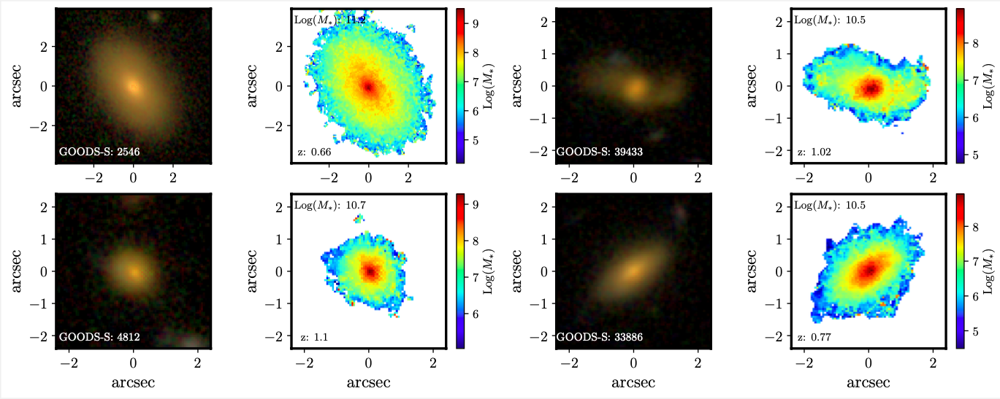
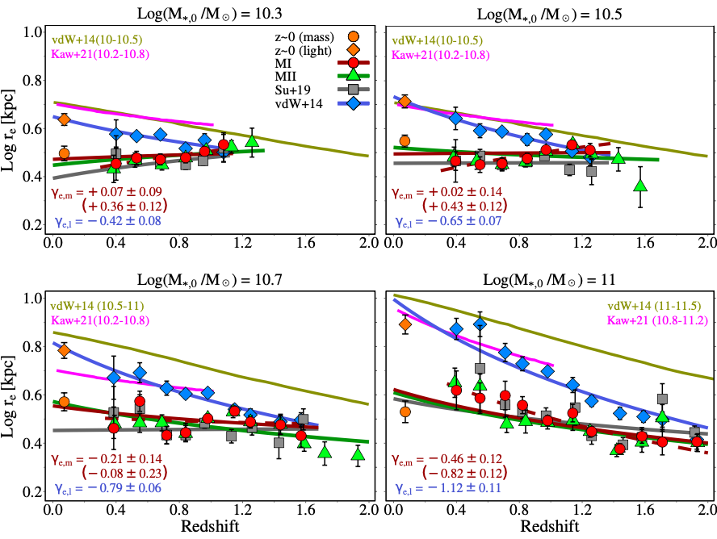
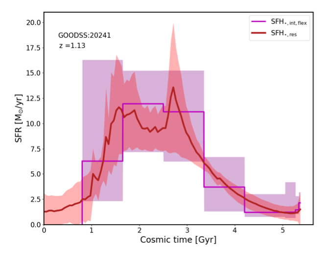
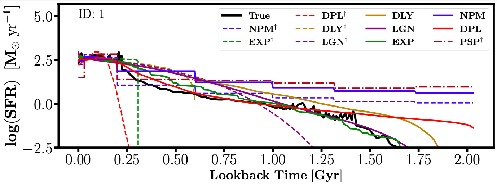

Goals
Stellar Mass and Morphology Evolution of Galaxies
To trace stellar mass growth and morphological evolution of galaxies from the early universe (using JWST and HST) to the present day.
Reconstructing Resolved Star-Formation Histories and Testing Parametric and Non-Parametric Models
To reconstruct star-formation histories (SFHs) on resolved scales and test different models (parametric and non-parametric).
Stellar Mass Growth and Morphological Evolution of Galaxies from the Early Universe to Today
To investigate quenching mechanisms, hidden star formation, and the link between stellar mass distribution and galaxy transformation.
Comparing Low- and High-Redshift Galaxies to Trace 13 Billion Years of Cosmic Evolution
To compare low- and high-redshift samples and build a unified picture of galaxy evolution across 13 billion years of cosmic history.
Why It Matters
Understanding how galaxies grow is central to modern astrophysics. Light-based measurements often miss key details, while mass-based and pixel-resolved analyses reveal the true physical processes shaping galaxies. Our work helps answer fundamental questions:
- How do galaxies grow their stars and structures over time?
- What causes galaxies to stop forming stars?
- How does the environment influence galaxy growth?
What We Share
We are committed to making our results accessible to the community. Through CosmoPix, we share:
- Galaxy catalogsGalaxy catalogs with derived stellar properties
- Stellar mass maps and spatially resolved data products.
- Star-formation history reconstructions at both integrated and resolved scales.
- Links to our publications, codes, and analysis tools, where possible.
By combining deep-field data with cutting-edge modeling, CosmoPix aims to provide new insights and new resources for understanding galaxies across space and time.
Structural Analysis of Galaxies from Stellar Mass Maps
One of the central aims of CosmoPix is to understand how galaxies
build their structures over cosmic time. While most previous studies
relied on light-based sizes and morphologies, we focus on stellar
mass maps, which provide a more physical view of galaxy growth.
This effort began with Mosleh et al. (2017), where we derived
one-dimensional stellar mass profiles from SED fitting of
surface-brightness profiles. Building on this, we extended the
analysis to a large sample of ~5500 galaxies up to z ~ 2 in the
CANDELS fields (Mosleh et al. 2020). These studies demonstrated
striking differences between light-based and mass-based sizes,
especially for star-forming galaxies. In particular, in Hasheminia
et al. 2022, 2024, we showed that the size evolution of star-forming
galaxies is significantly slower when measured using mass-based
profiles, and depends sensitively on stellar mass and progenitor
selection based on star-formation histories (SFHs).
These results highlight the importance of using mass-based sizes and
structures for a realistic picture of galaxy evolution. With JWST
data, we are now extending this approach to even higher redshifts,
probing the earliest phases of galaxy assembly and placing stronger
constraints on when and how galaxies first developed their
present-day structures.


Tracing Star-Formation Histories (SFHs) with Pixel-by-Pixel Modeling
A key advantage of the CosmoPix framework is the ability to
reconstruct star-formation histories (SFHs) at spatially resolved
scales. By modeling the spectral energy distribution (SED) pixel by
pixel, we can capture the diversity of stellar populations within
galaxies, which is often washed out in integrated measurements.
In Jain et al. (2024), we showed that spatially resolved SED fitting
recovers galaxy SFHs more reliably than integrated approaches, both
in terms of recovering the overall timescales of star formation and
distinguishing between inside-out and outside-in growth scenarios.
In Mosleh et al. (2025), we expanded this work by systematically
comparing different resolved and unresolved modeling approaches,
applied to both simulated and observed galaxies. We demonstrated
that spatially resolved methods are particularly powerful in
reconstructing the shapes of SFHs, with double power-law models
providing robust constraints on the rise and decline of star
formation.
Together, these studies confirm that pixel-based SED modeling is a
transformative tool for studying galaxy evolution. It not only
improves the accuracy of recovered SFHs but also opens a window into
the hidden phases of star formation and quenching that integrated
analyses often miss.

